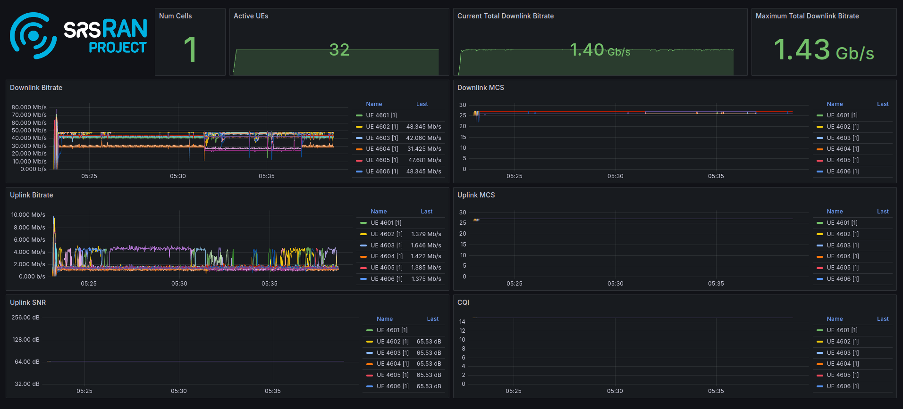

srsRAN gNB on Kubernetes
Introduction
This tutorial outlines the steps required to deploy the srsRAN gNB for a split 7.2 architecture using Kubernetes. This approach is well-suited for scenarios that require network deployment and management over extended periods, with high service availability and enhanced fault tolerance.
In short, Kubernetes can be described as follows:
When managing test networks, Kubernetes plays a pivotal role in streamlining and simplifying operations. It provides a unified platform for orchestrating network functions, optimizing resource usage, and automating scaling based on demand. Its built-in fault tolerance ensures consistent service availability, while its support for continuous deployment accelerates innovation. Kubernetes also simplifies deployment across varied environments, promoting adaptability. In essence, it offers a cohesive and scalable framework for efficient network function management.
Note, however, that such deployments may not be ideal for research and development-focused use cases that require fine-tuning of configuration files or source code modification. For iterative development and testing, “bare metal” setups are often more appropriate.
Further Reading
We recommend that users unfamiliar with Kubernetes or Helm begin by reviewing the following resources:
Setup Considerations
This tutorial will cover the following topics:
Set up Kubernetes/K3s nodes
Install a real-time kernel
Optimize system performance using TuneD
Install DPDK
Set up PTP synchronization
LLS-C1 and LLS-C3
Deploy the core network (Open5GS)
Deploy the gNB
Connect to internal core networks and SMOs within the cluster
Assign DPDK devices without using the SR-IOV plugin
Run load testing
cyclictest
srsRAN RU Emulator
Visualize KPIs using Grafana
This tutorial uses a single-node cluster running Ubuntu 24.04. Kubernetes version 1.24 or newer is required. A basic understanding of Kubernetes and Helm is assumed.
CU/DU
The CU/DU is provided by the srsRAN Project gNB. The Open Fronthaul (OFH) Library offers the required interface between the DU and the RU.
RU
For this tutorial, you can use any of the RUs supported by srsRAN. For more information on supported O-RUs, see this section of the RU tutorial.
5G Core
This tutorial uses the Open5GS 5G Core.
Open5GS is an open-source implementation of the 5G Core and EPC, written in C. The following links provide guidance on downloading and setting up Open5GS to work with srsRAN:
Clocking & Synchronization
The split 7.2 interface requires tight synchronization between the DU and RU. O-RAN WG4 has defined various synchronization mechanisms for use with Open Fronthaul, outlined in O-RAN.WG4.CUS.0-R003-v11.00, Section 11.
This tutorial explains how to configure LLS-C1 and LLS-C3 setups.
LLS-C1: The DU acts as the PTP grandmaster, and the RU is a PTP client.
LLS-C3: Both the DU and RU are PTP clients, synchronized to a common grandmaster.
The PTP grandmaster is typically a GPS or Rubidium clock, while the PTP client is usually a network interface card (NIC) with PTP support.
Set up a K8s/K3s Bare Metal Cluster
1. Deploy a Kubernetes Cluster
The installation of Kubernetes varies across distributions and the tools used for deployment. Depending on your requirements and environment, you can choose the tool that best suits your needs. In this tutorial, we deploy a single-node K3s cluster on Ubuntu 24.04 Server. K3s is a lightweight Kubernetes distribution that is easy to install and manage. It is designed for resource-constrained environments and edge computing, making it a great choice for bare metal Kubernetes deployments.
Popular tools for deploying Kubernetes include:
The installation of K3s is very straightforward and can be completed with a single command. The following command installs K3s on your server:
curl -sfL https://get.k3s.io | sh -
For more information, refer to the official K3s documentation.
2. Install Realtime Kernel
The real-time kernel in Ubuntu 24.04 LTS, built on the PREEMPT_RT patch, ensures low-latency and deterministic performance for time-sensitive operations. By prioritizing critical processes and ensuring predictable response times, it is ideal for telco applications. This release also improves support for Raspberry Pi hardware, enabling optimized real-time computing across diverse applications.
To install the real-time kernel on Ubuntu 24.04, you must obtain a free Canonical Pro subscription. Register on the Canonical website and create an account. After that, use your Pro token and the following commands to install the kernel:
sudo pro attach <your-token>
sudo pro enable realtime-kernel
Reboot the system after the installation is complete. For more information, refer to the Ubuntu documentation.
3. Install TuneD
For performance tuning using TuneD, refer to the srsRAN Performance Tuning Guide in our documentation.
4. Install DPDK
For DPDK installation instructions, refer to the DPDK guide.
Set Up PTP Synchronization
PTP synchronization can be established using tools like ptp4l, ts2phc, and phc2sys. These tools can be deployed using the srsRAN Project linuxptp Helm chart. As a first step, install the srsRAN Project Helm repository:
helm repo add srsran https://srsran.github.io/srsRAN_Project_helm/
Depending on your setup, PTP components can be deployed in different configurations. The most common ones are LLS-C1 and LLS-C3, which can use either unicast or multicast transmission.
In the LLS-C1 configuration, the DU server drives PTP synchronization, and the RU acts as a client. The RU receives PTP messages from the DU.
In the LLS-C3 configuration, both the DU and RU are clients receiving PTP messages from a common PTP grandmaster.
In this tutorial, we demonstrate how to deploy both LLS-C1 and LLS-C3 configurations using the G.8275.1 multicast profile of linuxptp. For more information, refer to the official linuxptp documentation.
The configuration is set in the values.yaml file of the Helm chart.
LLS-C1 example configuration:
config:
dataset_comparison: "G.8275.x"
G.8275.defaultDS.localPriority: "128"
maxStepsRemoved: "255"
logAnnounceInterval: "-3"
logSyncInterval: "-4"
logMinDelayReqInterval: "-4"
serverOnly: "1"
clientOnly: "0"
G.8275.portDS.localPriority: "128"
ptp_dst_mac: "01:80:C2:00:00:0E"
network_transport: "L2"
domainNumber: "24"
LLS-C3 example configuration:
config:
dataset_comparison: "G.8275.x"
G.8275.defaultDS.localPriority: "128"
maxStepsRemoved: "255"
logAnnounceInterval: "-3"
logSyncInterval: "-4"
logMinDelayReqInterval: "-4"
serverOnly: "0"
clientOnly: "1"
G.8275.portDS.localPriority: "128"
ptp_dst_mac: "01:80:C2:00:00:0E"
network_transport: "L2"
domainNumber: "24"
For additional configuration options, refer to the linuxptp Helm chart README. An example values.yaml can be found here.
To deploy the PTP components, use the following command:
helm install ptp4l srsran/linuxptp -f values.yaml
If the server is under heavy load and PTP performance degrades, you can assign the linuxptp Pod an exclusive CPU core by editing the resources section of the values.yaml file. This ensures the linuxptp Pod is isolated from other workloads:
resources:
requests:
cpu: "1"
memory: "512Mi"
limits:
cpu: "1"
memory: "512Mi"
Set Up Core Network: Open5GS
Open5GS is an open-source implementation of the 5G Core and EPC, written in C. The following links provide the necessary information to download and set up Open5GS for use with srsRAN:
First, install a PersistentVolume (PV) and a PersistentVolumeClaim (PVC) for MongoDB.
Apply the PV and PVC manifest:
kubectl apply -f open5gs-pv-pvc.yaml
The PV is configured using hostPath. Ensure that the path exists and has the proper file access rights on the host
system. The default path is /mnt/data/vol. If needed, create it and set the file access rights using:
mkdir -p /mnt/data/vol
chown -R 1001:1001 /mnt/data/vol
Next, prepare the values.yaml file and set the required RAN parameters. You can use the following as a starting point:
Deploy Open5GS using Helm. This example assumes your values.yaml references the previously created PVC:
helm install open5gs oci://registry-1.docker.io/gradiant/open5gs --version 2.2.5 -f 5gSA-values.yaml -n open5gs --create-namespace
You should see the following output:
Pulled: registry-1.docker.io/gradiant/open5gs:2.2.0
Digest: sha256:99d49ab6bb2d4a5c78be31dd2c3a99a0780de79bd22d0bfa9df734ca2705940a
NAME: open5gs
LAST DEPLOYED: Mon Dec 9 11:09:17 2024
NAMESPACE: open5gs
STATUS: deployed
REVISION: 1
TEST SUITE: None
Wait for all Pods to be in the Running state. Check with:
kubectl get pods -n open5gs
Once the components are running, you can edit subscribers via the Open5GS WebUI. To do this, forward port 9999 of the open5gs-webui service to your local machine:
kubectl port-forward svc/open5gs-webui 9999:9999 -n open5gs
Expected output:
Forwarding from 127.0.0.1:9999 -> 9999
Forwarding from [::1]:9999 -> 9999
Leave the shell open and access the WebUI by visiting http://localhost:9999 in your browser. (Default credentials: admin / 1423). Once you’re done editing subscribers, you can close the shell.
Set Up gNB
To deploy the gNB, edit the values.yaml file and set the desired RAN parameters. An example values.yaml for the srsRAN Project Helm Chart can be found here.
If you haven’t already added the srsRAN Project Helm repository, add it using:
helm repo add srsran https://srsran.github.io/srsRAN_Project_helm/
In the following, we explain how to set up different scenarios using the srsRAN Helm Chart.
1. Connecting to Internal Core Networks Within the Cluster
When all components run within the same Kubernetes cluster, you can use DNS hostnames instead of a LoadBalancer. For example, if the Open5GS core network is deployed in the same cluster, use the AMF service’s hostname to connect to it.
To determine the cluster domain, run:
kubectl run -it --image=ubuntu --restart=Never shell -- sh -c 'apt-get update > /dev/null && apt-get install -y dnsutils > /dev/null && nslookup kubernetes.default | grep Name | sed "s/Name:\skubernetes.default//"'
Example output:
If you dont see a command prompt, try pressing enter.
debconf: delaying package configuration, since apt-utils is not installed
.svc.kubernetes.local
In this case, the cluster domain is svc.kubernetes.local. To construct a service hostname:
<service-name>.<namespace>.svc.<cluster-domain>
To list all available services:
kubectl get services -A
Example output:
NAMESPACE NAME TYPE CLUSTER-IP EXTERNAL-IP PORT(S) AGE
default kubernetes ClusterIP 10.96.0.1 <none> 443/TCP 10d
default open5gs-amf-ngap ClusterIP 10.111.110.41 <none> 38412/SCTP 16h
[...]
Here, the AMF service name is open5gs-amf-ngap and the namespace is default. Therefore, the hostname is:
open5gs-amf-ngap.default.svc.kubernetes.local
Use this hostname in the amf section of the gNB configuration in values.yaml.
For more information, refer to the official Kubernetes DNS documentation.
2. Assign DPDK Devices Without the SR-IOV Plugin
To assign PFs or VFs directly to the container without using the SR-IOV plugin, you must grant the Pod full access to the host system. In values.yaml, set the following:
Enable access to the host network:
network:
hostNetwork: true
Enable privileged mode and set required capabilities:
securityContext:
capabilities:
add: ["SYS_NICE", "NET_ADMIN"]
privileged: true
With this setup, the gNB Pod has full access to the hosts network stack. This enables the Pod to access both external and internal Kubernetes network resources.
Load Testing
In the following, we present two methods to test the maximum load on the system.
1. srsRAN RU Emulator
The srsRAN RU Emulator is a tool that emulates a Radio Unit (RU). It prints KPIs such as early and late packets, which are useful for debugging network issues and evaluating how much load a deployment can handle. You can quickly deploy the RU Emulator using the dedicated Helm chart.
Before deploying the RU Emulator, you must obtain the RU and DU MAC addresses, along with the bandwidth, VLAN tag, and compression method. These parameters are mandatory:
ru_mac_addr: MAC address of the interface used for Open Fronthaul (OFH) traffic.
du_mac_addr: MAC address of the DU interface used for OFH traffic.
Example configuration:
ru_emu:
cells:
- bandwidth: 100
network_interface: enp4s0f0
ru_mac_addr: 50:7c:6f:45:44:33
du_mac_addr: 00:11:22:33:44:00
vlan_tag: 6
ul_port_id: [0]
compr_method_ul: "bfp"
compr_bitwidth_ul: 9
Use the following configuration inside the values.yaml file to enable the RU Emulator:
securityContext:
capabilities:
add: ["SYS_NICE", "NET_ADMIN"]
privileged: true
Also make sure to explicitly disable SR-IOV by setting:
sriovConfig:
enabled: false
Ensure that the network_interface and du_mac_addr values are set correctly for your deployment.
2. Assess Maximum Latency Using cyclictest
cyclictest is a tool used to measure application latency on real-time systems. To assess the maximum latency on your system, you can deploy cyclictest using the srsRAN Project rt-test Helm chart.
The rt-test Helm chart is designed to run two real-time test tools: cyclictest and stress-ng. While cyclictest measures system latency and jitter, stress-ng generates high CPU and memory load to simulate system stress. Running both together allows you to evaluate how well the system maintains real-time performance under load.
To configure your test scenario, update the config section of the values.yaml file. For example:
config:
rt_tests.yml: |-
stress-ng: "--matrix 0 -t 12h"
cyclictest: "-m -p95 -d0 -a 1-15 -t 16 -h400 -D 12h"
This configuration runs stress-ng for 12 hours using the –matrix workload, and launches cyclictest pinned to CPU cores 1–15 across 16 threads with high priority, running for 12 hours. For more information on cyclictest and stress-ng, refer to the cyclictest and stress-ng documentation.
To deploy rt-test, use the following Helm command:
helm install rt-tests srsran/rt-tests -n srsran --create-namespace
Visualizing KPIs via Grafana
To visualize gNB KPIs, we provide a Grafana dashboard designed to work with the metrics server included in the srsRAN Project Helm repository. The metrics server collects and parses gNB metrics, stores them in an InfluxDB database, and the Grafana dashboard then displays them.
If you haven’t already added the srsRAN Helm repository, add it now:
helm repo add srsran https://srsran.github.io/srsRAN_Project_helm/
The Grafana dashboard comes with a pre-configured values.yaml file. The only field that must be adjusted is the cluster domain, which is required to resolve service hostnames.
To determine your cluster domain, run:
kubectl run -it --image=ubuntu --restart=Never shell -- sh -c 'apt-get update > /dev/null && apt-get install -y dnsutils > /dev/null && nslookup kubernetes.default | grep Name | sed "s/Name:\skubernetes.default//"'
This command launches a temporary container and runs a DNS query against the kubernetes.default service. Expected output:
If you dont see a command prompt, try pressing enter.
debconf: delaying package configuration, since apt-utils is not installed
.svc.kubernetes.local
In this case, the cluster domain is svc.kubernetes.local. Adjust the values.yaml file by replacing the default domain (.svc.cluster.local) with the string returned by the above command.
Download the default values.yaml file using:
wget https://raw.githubusercontent.com/srsran/srsRAN_Project_helm/refs/heads/main/charts/grafana-srsran/values.yaml
After editing the file, the metrics-server section should look like this:
metrics-server:
config:
port: 55555
bucket: srsran
testbed: default
url: http://grafana-influxdb.srsran.svc.kubernetes.local
org: srs
token: "605bc59413b7d5457d181ccf20f9fda15693f81b068d70396cc183081b264f3b"
serviceType: "ClusterIP"
Once updated, delete the temporary container:
kubectl delete pod shell
Now deploy the Grafana dashboard:
helm install srsran-grafana srsran/grafana-deployment -f values.yaml -n srsran --create-namespace
After all components are running, the gNB application can start sending metrics to the metrics server.
To access the Grafana dashboard, forward the service port to your local machine:
export POD_NAME=$(kubectl get pods --namespace srsran -l "app.kubernetes.io/name=grafana,app.kubernetes.io/instance=srsran-grafana" -o jsonpath="{.items[0].metadata.name}")
kubectl --namespace srsran port-forward $POD_NAME 3000
Open your browser and go to: http://localhost:3000
An example of the Grafana dashboard is shown below:
{kind=link}

Clean Up Deployments
To clean up all deployments, use the following commands:
To delete the srsRAN Project deployment:
helm uninstall srsran-project -n srsran
To delete the linuxptp deployment:
helm uninstall linuxptp -n srsran
To delete the Open5GS deployment:
helm uninstall open5gs -n open5gs
To delete the Grafana deployment:
helm uninstall srsran-grafana -n srsran